Section 7 Sample Exams
This section includes the following:
exam learning objectives used to construct the exams,
a sample midterm exam constructed form the learning objectives,
a sample final exam constructed from the learning objective, and
video recorded solutions to both sample exams.
Subsection 7.1 Exam Learning Objectives
Plot ordered pairs in a Cartesian coordinate system.
Find \(x\)-intercepts and \(y\)-intercepts of an equation.
Use the Pythagorean Theorem to find the distance between two ordered pairs \((x_1,y_1)\) and \((x_2,y_2)\text{,}\)
\begin{equation*} \sqrt{(x_2-x_1)^{2}+(y_2-y_1)^{2}}. \end{equation*}Find the midpoint of two ordered pairs \((x_1,y_1)\) and \((x_2,y_2)\)
\begin{equation*} \left(\frac{x_1+x_2}{2},\frac{y_1+y_2}{2}\right). \end{equation*}Find the slope of a line passing through the points \((x_1,y_1)\) and \((x_2,y_2)\)
\begin{equation*} m = \frac{y_2-y_1}{x_2-x_1}. \end{equation*}Use the point-slope formula to find an equation of a line with slope \(m\) passing through the point \((x_1,y_1)\)
\begin{equation*} y-y_1 = m(x-x_1). \end{equation*}Given two lines, determine whether their graphs are parallel or perpendicular.
Write the equation of a line passing through a given point that is parallel or perpendicular to a given line.
Solve a linear equation.
Set up a linear equation to solve a real-world application.
Solve a rational equation.
Add, subtract, multiply, and divide complex numbers.
Simplify powers of \(i\text{.}\)
Solve quadratic equations by factoring.
Solve quadratic equations by completing the square.
Solve a quadratic equation \(ax^{2}+bx+c=0\) by using the quadratic formula
\begin{equation*} x =\frac{-b\pm \sqrt{b^{2}-4ac}}{2a}. \end{equation*}Use the discriminant of a quadratic equation \(ax^{2}+bx+c=0\) to determine the number of real solutions.
Solve equations involving rational exponents.
Solve radical equations.
Solve absolute value equations.
Correctly and precisely use interval notation.
Solve inequalities in one variable algebraically.
Solve absolute value inequalities.
Solve compound inequalities.
Determine whether a relation represents a function.
Evaluate functions using graphs, tables, and formulas.
Use the vertical line test to identify functions.
Use the horizontal line test to identify one-to-one functions.
Find the domain and range of a function defined by an equation.
Find the domain and range of a function given its graph.
Graph piecewise-defined functions.
Find the average rate of change of a function \(f(x)\) over an interval \([a,b]\)
\begin{equation*} \frac{\Delta y}{\Delta x} =\frac{f(b)-f(a)}{b-a}. \end{equation*}Interpret the slope of a line as a rate of change.
Use a graph to determine where a function is increasing, decreasing, or constant.
Use a graph to locate the local and absolute maxima and minima of a function.
Combine functions using algebraic operations.
Evaluate the composition of two functions.
\begin{equation*} (f\circ g)(x)= f(g(x)). \end{equation*}Find the domain of a composite function.
Decompose a composite function into its component functions.
Graph functions using vertical and horizontal shifts.
Graph functions using reflections about the \(x\)-axis and/or the \(y\)-axis.
Determine whether a function is even, odd, or neither.
Find the inverse of a one-to-one function.
Use the graph of a one-to-one function to graph its inverse function on the same coordinate plane.
Use the method of completing the square to put a quadratic function in standard form
\begin{equation*} f(x) = a(x+h)^2+k. \end{equation*}Determine a quadratics minimum or maximum value.
-
Identify the intercept(s), zero(s), vertex, domain, and range of a quadratic function \(f(x)=ax^{2}+bx+c.\)
- Vertex: \(\left(\frac{-b}{2a}, f\left(\frac{-b}{2a}\right)\right)\)
- Zeros: \(\frac{-b\pm \sqrt{b^{2}-4ac}}{2a}\)
- \(y\)-intercept: \((0,c)\)
Solve real-world problems using polynomial functions.
Determine the end-behavior of a polynomial function using arrow notation.
Recognize that a polynomial of degree \(n\) can have at most \(n-1\) turning points.
Identify the zeros of a polynomial and their multiplicities.
Sketch the graph of a polynomial function.
Given the graph of a polynomial function find a formula for the polynomial function of least degree.
Apply the division algorithm to divide polynomials.
Apply the remainder and factor theorems for polynomials.
Use the rational zeros theorem to find all potential rational zeros of a polynomial with integer coefficients.
Identify the asymptote(s), intercept(s), zeros, vertex, domain, and range of a rational function.
Determine the end-behavior of a rational function using arrow notation.
Sketch the graph of a rational function.
Subsection 7.2 Sample Midterm Exam
The following is a sample exam of similar length and difficulty to the midterm exam. The sample exam is not exhaustive and does not include all types of exercises that could appear on the final exam. On the other hand, all exercises on the final are intended to assess one or more of the exam learning objectives 1-42.
Students are given 75 minutes to complete the midterm exam. The exam consists of 21 questions each worth 5 points. The exam grade is reported out of 100 points with the possibility of students earning up to 105%.
Exercises Exercises
1.
(a)
Find the midpoint of the line segment joining \(P\) and \(Q\)(b)
Find the distance between the points \(P\) and \(Q\text{.}\)2.
(a)
Find the slope of the line passing through the points \(P\) and \(Q\text{.}\)(b)
Find an equation of the line passing through the points \(P\) and \(Q\) and write this equation in point-slope form.3.
(a)
Solve the quadratic equation by completing the square.(b)
Solve the quadratic equation by completing the square.4.
Solve the equation5.
Solve the inequality and express your answer in interval notation.6.
Solve the equation.7.
Find the domain of the function \(f(x)\) and express your answer in interval notation.8.
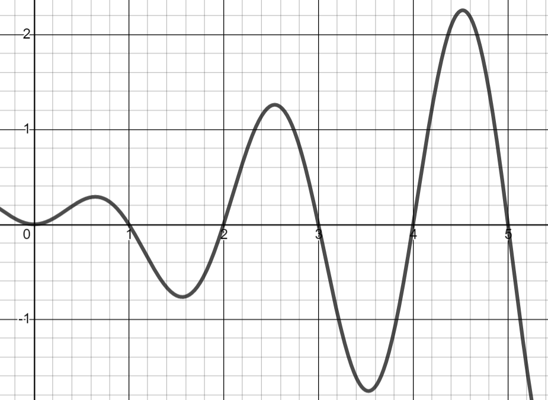
(a)
\(f(1) = \)(b)
\(f(4.5) = \)(c)
\(f(2.5) = \)(d)
\(f(0.5) = \)9.
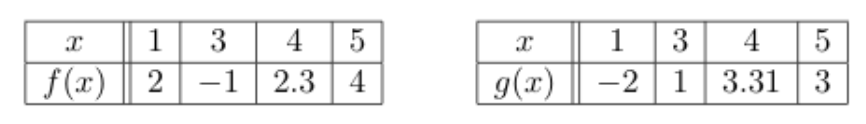
(a)
\((f+g)(4)=\)(b)
\((fg)(5)=\)(c)
\(\left(\frac{f}{g}\right)(3)=\)(d)
\((g\circ f)(5)=\)10.
Solve the equation.11.
(a)
\(f(x)=3x^2+3|x|\)(b)
\(g(s)=4s^3-7s\)12.
Find the inverse of the function13.
(a)
\(f(g(x))\)(b)
\(g(f(x))\)14.
Mrs. Smith wants to pave a walkway around the perimeter of her garden that measures 8 feet wide and 15 feet long. Find the width of the walkway if the total perimeter is 66 feet around the outside edge.15.
Dr. Pollard poured 22 grams of 7% alcohol solution into a large mixing container. He had plenty of 16% alcohol on hand. (Let \(x\) represent the number of grams of the 16% solution.) How much of the 16% solution did he need to pour into the container in order to have a 12% solution for his lab experiment? (Round your answer to the tenths place if necessary.)16.
(a)
Use the vertical line test to determine if the relation is a function.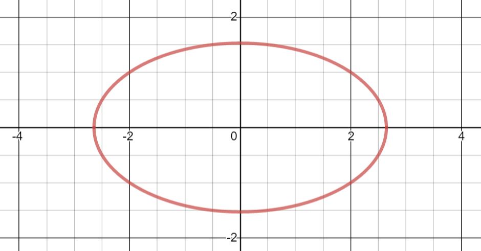
(b)
Use the horizontal line test to determine if the relation is a function.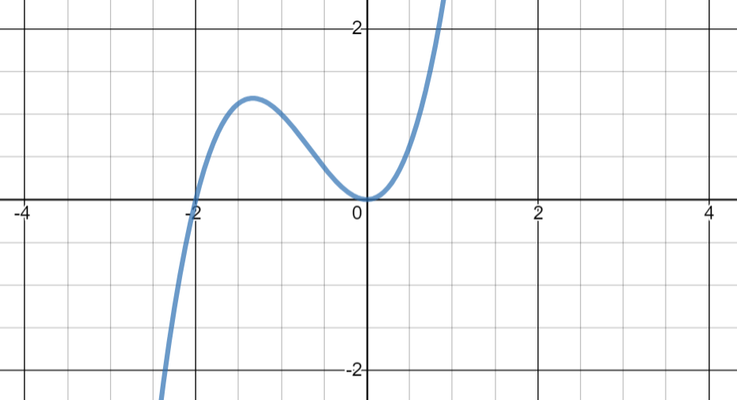
17.
(a)
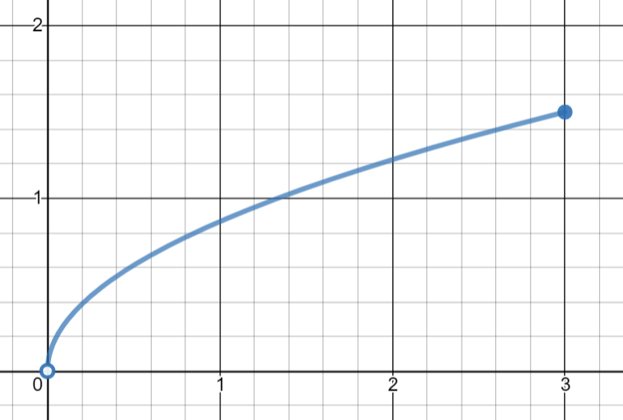
(b)
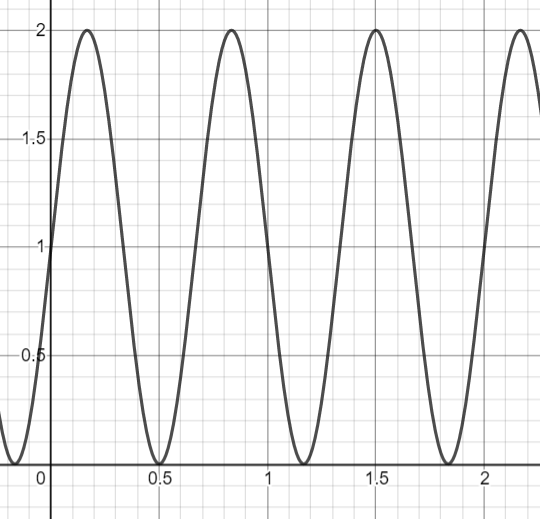
18.
Find the average rate of change of f(x)=x^{2}+1 over the interval [0,3].19.
(a)
\((-4+3i)(2-i)\)(b)
\(\frac{1+3i}{2+i}\)20.
Determine the \(x\)-intercept(s) and \(y\)-intercept(s) of21.
Solve the equationSubsection 7.3 Sample Final Exam
The following is a sample exam of similar length and difficulty to the final exam. The sample exam is not exhaustive and does not include all types of exercises that could appear on the final exam. On the other hand, all exercises on the final are intended to assess one or more of the exam learning objectives.
Students are given two hours to complete the final exam. The exam consists of 22 questions each worth 5 points. The exam grade is reported out of 100 points with the possibility of students earning up to 110%.
Exercises Exercises
1.
(a)
Solve the equation \(\sqrt[3]{5x^{2}-6x}=x.\)(b)
Find the \(x\)-intercept(s) of \(g(x) = \sqrt[3]{5x^{2}-6x}-x.\)All are solutions to the radical equation.
Thus the following are all x-intercepts \((0,0), (2,0)\) and \((3,0).\)
2.
Determine the least possible degree of the polynomial function.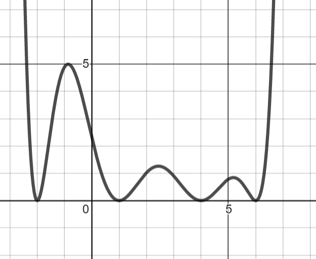
3.
Find the inverse of the function \(f(x) = \sqrt[3]{10-x}.\)4.
Divide the polynomial \(3x^{3}-7x+2\) by \(x+1\text{.}\) Clearly state the quotient and the remainder.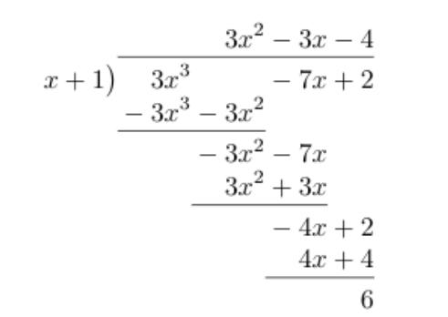
5.
Find the equations of the horizontal and vertical asymptotes for the functionThe vertical asymptote is at \(x=-2\)
Since the degree of the top and bottom are the same there is a horizontal asymptote at
6.
(a)
Solve the equation \(\ln(x)+\ln(3)=2\ln(x).\)(b)
Covert the equation to exponential form. Then solve for \(x\text{.}\)7.
(a)
Find the vertex of the quadratic function \(f(x)=2x^{2}-8x\)(b)
Sketch the graph of the quadratic function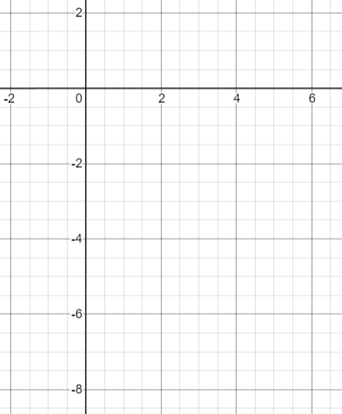
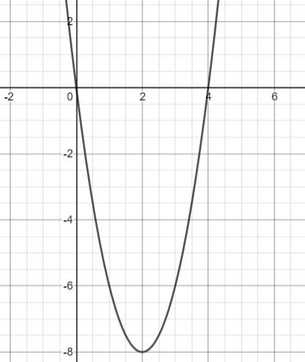
8.
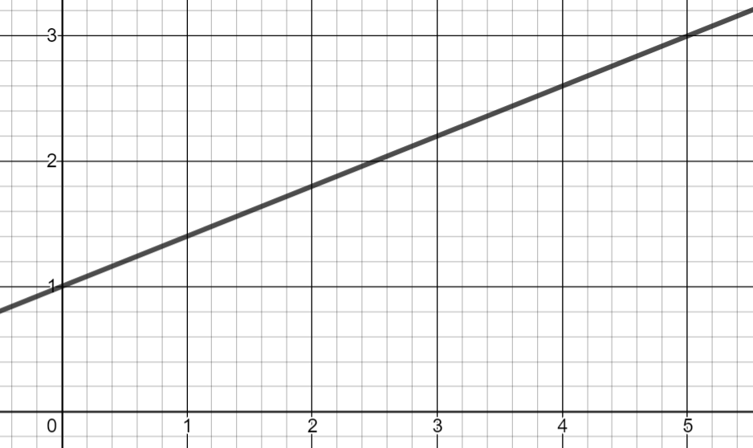
(a)
Identify the slope of the line graphed above.(b)
Write an equation for the line in point-slope form.9.
Solve the equation10.
Find the equation of an exponential function that passes through the points \((0,-1)\) and \((2, -9)\text{.}\) Then determine if the function is increasing or decreasing.From the first point we find that
From the second point we find that
Therefore the function is decreasing and
11.
(a)
\(f(x)=5x^{3}+7x^2-19x+1\)(b)
\(g(x)=\sqrt[]{5x+1}\)(c)
\(h(x)=\log(x)\)12.
(a)
If you invest $3000 in an account that pays 9% APR compounded continuously, how much will the account be worth after 3 years(b)
If you invest $3000 in an account that pays 9% APR compounded monthly, how much will the account be worth after 3 years13.
(a)
\(\log(2)=x\)(b)
\(\ln(x+1)=3\)(c)
\(\log_{2}(8)=3\)14.
(a)
\((3+i)(4-2i)\)(b)
\(\frac{5+20i}{1-2i}\)15.
Solve the inequality and write your answer in interval notation.16.
Solve the equation17.
An account with an initial deposit of $6,500 earns 7.2% annual interest, compounded annually. How long will it take for the account to be worth $7,000?18.
Solve the equation19.
Use the Rational Zero Theorem to list all possible rational zeros of the polynomialfactors of 3: \(\pm 3, \pm 1\)
factors of 27: \(\pm 27, \pm 9, \pm 3, \pm 1\)
Possible zeros: \(\pm 27, \pm 9, \pm 3, \pm 1, \pm 1/3\)
20.
Find an equation for the quadratic function \(f(x)\) graphed below.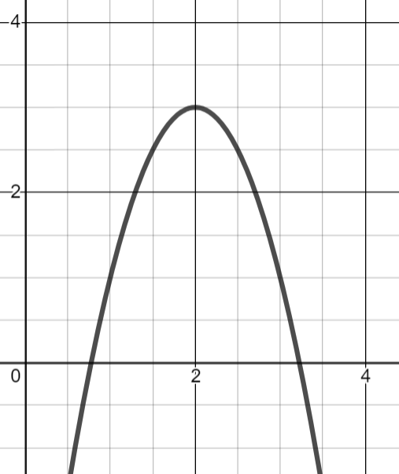
The vertex is at \((2,3)\text{.}\) Therefore
The point \((1,1)\) is on the graph. Hence
21.
The population of honey badgers is modeled by the function \(P(t)=25(1.09)^t\text{,}\) where \(t\) is given in years. To the nearest whole number, what will the population be after \(4.5\) years?22.
(a)
Identify the location of all the zeros of the polynomial graphed below.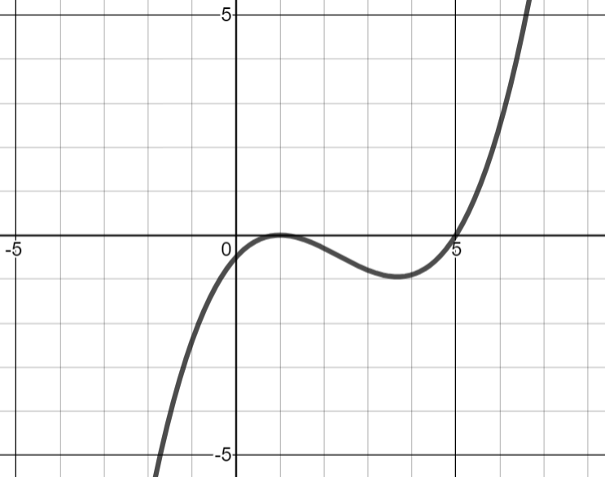